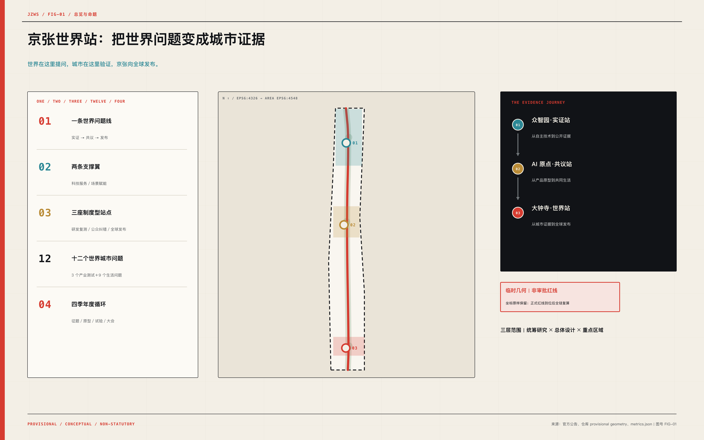
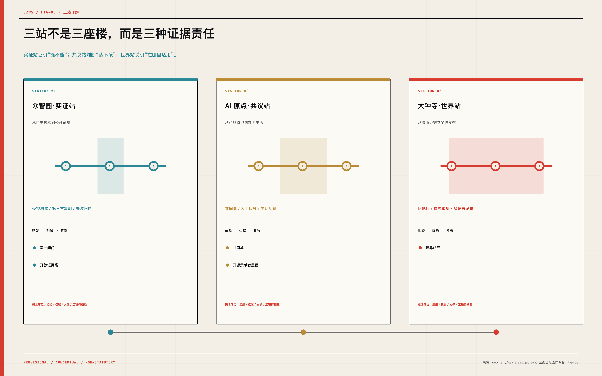
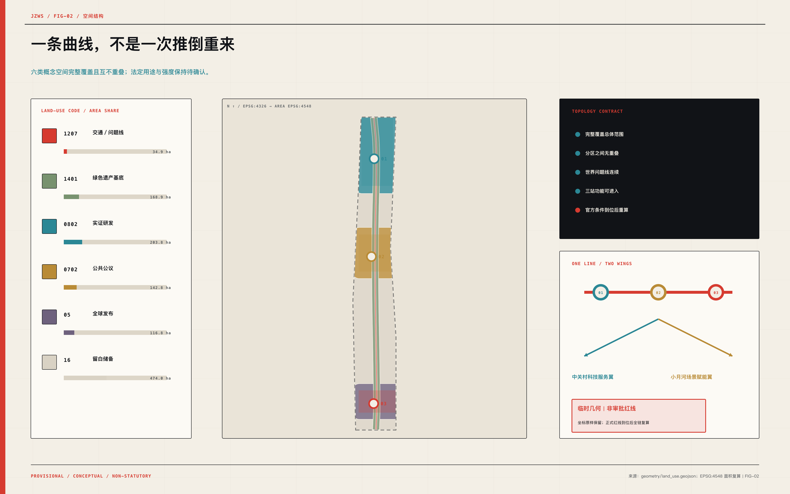
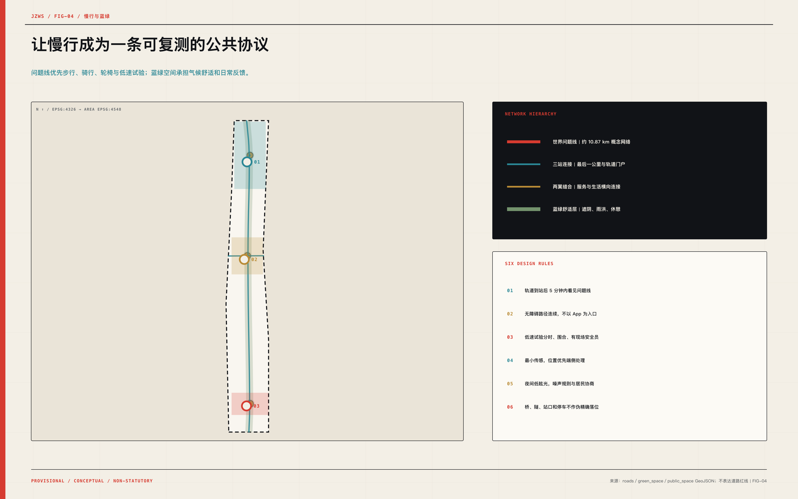
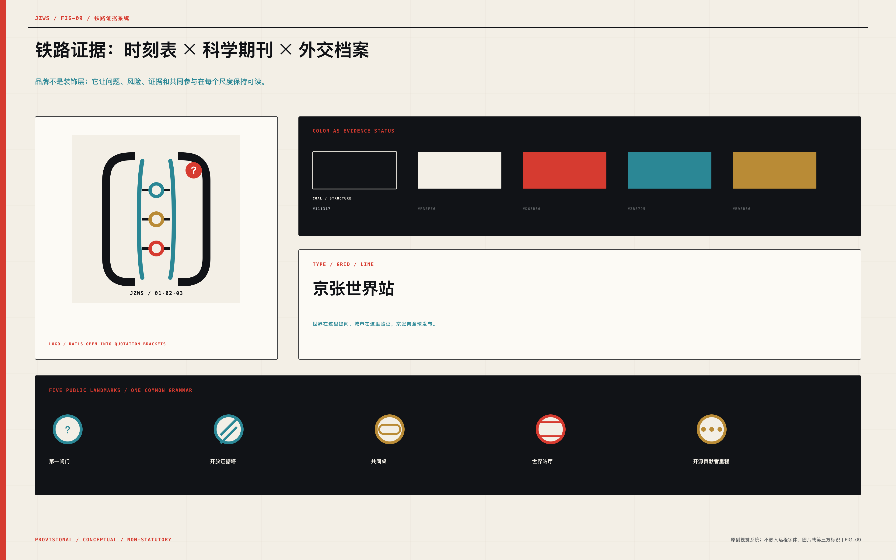
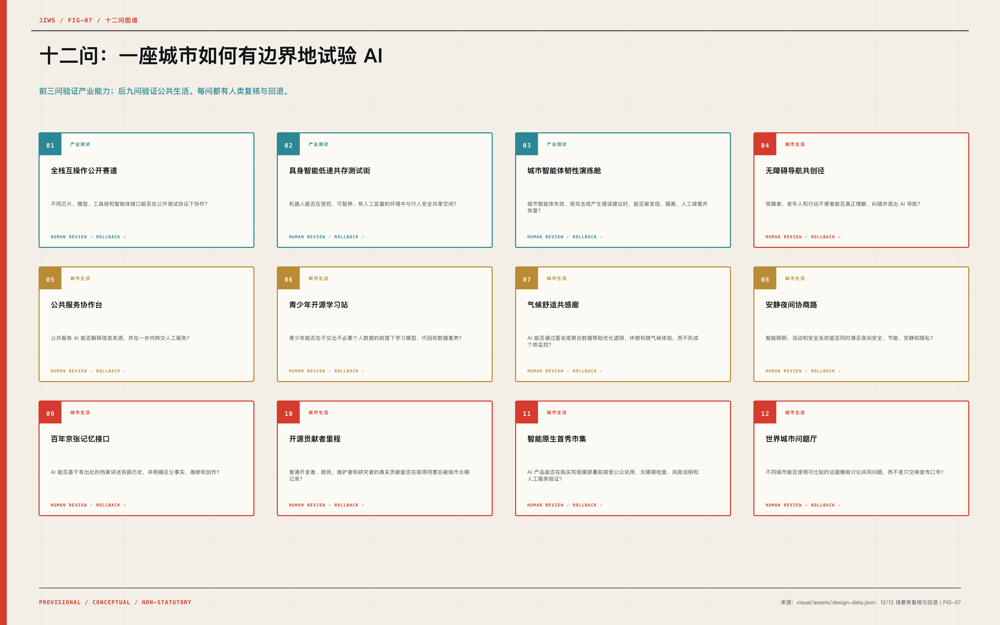
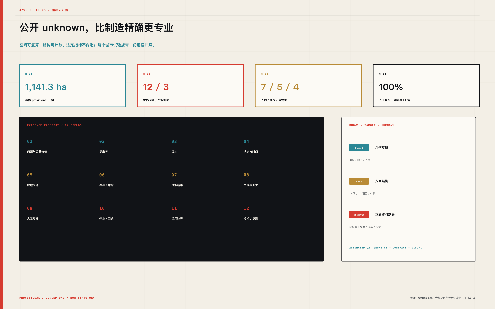
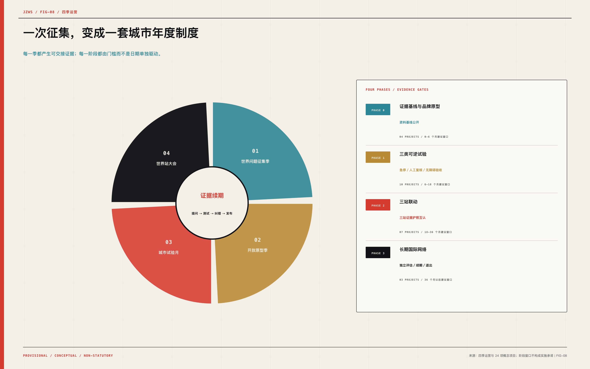

统筹研究
约 43.6 km²组织世界城市 AI 问题、产业协同与区域网络
JINGZHANG WORLD STATION / 2026
世界在这里提问，城市在这里验证，京张向全球发布。
不是另一条 AI 展示廊道，而是一套让世界提问、城市验证、证据发布的公共基础设施。

01 / SCOPE
统筹研究决定问题，总体设计组织空间，重点区域验证具体门槛。
组织世界城市 AI 问题、产业协同与区域网络
一线两翼三站、用地、慢行、蓝绿与分期
实证站、共议站、世界站厅的详细机制
02 / KEY AREAS
从自主技术到公开证据
从产品原型到共同生活
从城市证据到全球发布

03 / LAND USE
六类概念角色完整覆盖、互不重叠；容积率、高度、停车和造价保持 unknown。
1207交通／问题线34.9 ha1401绿色遗产基底168.9 ha0802实证研发203.8 ha0702公共公议142.8 ha05全球发布116.8 ha16待核验储备474.0 ha
04 / MOBILITY
世界问题线优先步行、骑行、轮椅与低速试验；站间联系表达网络，不伪造道路红线。

05 / BLUE-GREEN
遮阴、雨洪、休憩、夜间安静与无障碍优先于互动屏幕；环境数据采用聚合或匿名方式。
06 / BUILDINGS + LANDMARKS
18 个小型可逆模块只验证功能容纳；五个地标让问题、失败、共同参与和真实贡献可见。

07 / AI SCENARIOS
前三问验证产业能力，后九问验证公共生活；所有 AI 场景均具备人工复核、回退和退出。
不同芯片、模型、工具链和智能体接口能否在公开测试协议下协作？
机器人能否在受控、可暂停、有人工监督的环境中与行人安全共享空间？
城市智能体失效、受攻击或产生错误建议时，能否被发现、隔离、人工接管并恢复？
视障者、老年人和行动不便者能否真正理解、纠错并退出 AI 导航？
公共服务 AI 能否解释信息来源，并在一步内转交人工服务？
青少年能否在不交出不必要个人数据的前提下学习模型、代码和数据素养？
AI 能否通过匿名或聚合数据帮助优化遮阴、休憩和微气候体验，而不形成个体监控？
智能照明、活动和安全系统能否同时满足夜间安全、节能、安静和隐私？
AI 能否基于有出处的档案讲述铁路历史，并明确区分事实、推断和创作？
普通开发者、居民、维护者和研究者的真实贡献能否在取得同意后被城市长期记录？
AI 产品能否在购买和规模部署前接受公众试用、无障碍检查、风险说明和人工服务验证？
不同城市能否使用可比较的证据模板讨论共同问题，而不是只交换宣传口号？

08 / METRICS

09 / DELIVERY + COMPLIANCE
24 项概念项目按证据门槛推进；公告 1.3／1.4／1.5、agent.1-agent.6、六项标准与十五项设计深度全部闭环。
0-6 个月建议窗口
04 项概念项目6-18 个月建议窗口
10 项概念项目18-36 个月建议窗口
07 项概念项目36 个月以后建议窗口
03 项概念项目
10 / SOURCES
open-city-ai/haidian maintainers｜用途：Submission contract, depth, bilingual, figure, HTML, PDF, and validation requirements｜限制：Workflow authority, not a source of official site geometry
docs/formal-submission-guide.mdopen-city-ai/haidian maintainers｜用途：Three positions, five functions, Three Zones and Two Wings, agent.1-agent.6｜限制：Agent-facing taskbook; does not replace statutory planning
brief/site-package/agent_taskbook.jsonopen-city-ai/haidian maintainers｜用途：Provisional intake, topology generation, visualization, and validation｜限制：Not official, precise, statutory, or approval-ready; all precision-sensitive outputs require recalculation
brief/site-package/geometry/provisional_boundaries.geojson北京市规划和自然资源委员会海淀分局｜用途：Official scope, key areas, tasks, and deliverable context｜限制：Precise redlines and professional attachments were not publicly included in the repository package
https://ghzrzyw.beijing.gov.cn/zhengwuxinxi/tzgg/hd/202605/t20260509_4643047.html北京市科学技术委员会、中关村科技园区管理委员会｜用途：Nine-kilometre corridor, international network, AI city living room, standards, and cooperation-hub background｜限制：Strategic background only; no parcel-level control
https://kw.beijing.gov.cn/xwdt/kcyx/xwdtcyfz/202604/t20260403_4573808.html北京市经济和信息化局｜用途：Technology, compute, data, scenarios, open source, ecosystem, and safety-governance alignment｜限制：Citywide policy context; no project commitment
https://jxj.beijing.gov.cn/ztzl/ywzt/hbjh/hbdt/zcwj/rgznzc/202603/t20260316_4557526.html中华人民共和国外交部｜用途：International platforms, open cooperation, testing, evaluation, UN mechanisms, and capacity-building alignment｜限制：National action-plan context; no local implementation commitment
https://www.mfa.gov.cn/web/ziliao_674904/1179_674909/202507/t20250726_11677803.shtml北京市服务业扩大开放综合试点｜用途：AI Origin community and global talent first-stop background｜限制：Published descriptive figures require date-sensitive citation and are not parcel controls
https://open.beijing.gov.cn/html/haidian/gzdt/2026/1/1768186004465.htmlUnited Nations｜用途：Global multistakeholder question-setting and dialogue mechanism｜限制：Global governance precedent; not a direct local institutional template
https://www.un.org/global-dialogue-ai-governance/enUnited Nations Office for Digital and Emerging Technologies｜用途：Bridge between evidence, regions, private practice, and implementation｜限制：Program precedent; no spatial transfer without local adaptation
https://www.un.org/digital-emerging-technologies/content/ai-governance-humanity-labInternational Telecommunication Union｜用途：Convening, demonstration, and global participation precedent｜限制：Event precedent only; World Station adds a year-round urban test cycle
https://aiforgood.itu.int/summit26/practical-information/Infocomm Media Development Authority of Singapore｜用途：Open testing toolkit, foundation community, and assurance sandbox precedent｜限制：Testing mechanism requires local legal, technical, and sector adaptation
https://www.imda.gov.sg/how-we-can-help/ai-verifyNational Institute of Standards and Technology｜用途：Measurement science, task groups, and cross-industry consortium precedent｜限制：US institutional precedent; no implication of partnership
https://www.nist.gov/news-events/news/2026/05/nist-expands-ai-consortiums-scope-calls-new-membersEuropean Commission｜用途：Real-world regulatory sandbox and safeguard precedent｜限制：EU legal context; only the bounded-test mechanism is transferred
https://digital-strategy.ec.europa.eu/en/policies/regulatory-framework-aiOECD.AI｜用途：Comparable voluntary cross-border reporting precedent｜限制：Reporting precedent; not a certification or local legal requirement
https://oecd.ai/en/hiroshimaUniversité de Montréal｜用途：Citizen consultation and multidisciplinary ethics precedent｜限制：Ethical precedent; local consultation design remains conceptual
https://montrealdeclaration-responsibleai.com/the-declaration/UK AI Security Institute｜用途：Independent evaluation, research, and international cooperation precedent｜限制：Institutional precedent; no implication of partnership or approval
https://www.aisi.gov.uk/11 / ASSUMPTIONS
仓库 provisional 坐标原样保留；不是审批红线，正式资料到位后全链复算。
总体设计范围采用仓库 PROV-SITE-001 的原始坐标，身份保持 provisional_constraint，不作官方红线表述。
面积、比例、分区和图面仅用于本次概念方案；收到正式红线后必须重新裁剪并复算全部空间指标。仓库提供的大钟寺重点区域 PROV-KEY-003 与总体 provisional polygon 存在位置偏离，原坐标被原样保留且未平移。
该片区的连线与概念分区可表达策略关系，但不得据此确定宗地、道路、建筑落位或审批边界。法定用地、容积率、建筑高度、建筑密度、退界、日照、消防等控规及工程控制条件未进入公开场地包。
所有建筑模块均为概念占位；容积率、总建筑面积、建筑密度与高度在 metrics.json 中保持 unknown。道路红线、轨道保护区、公交站点、停车、给排水、电力、燃气、通信与防洪资料未提供。
慢行、站间联系和新型基础设施为网络级策略；道路面积、停车与市政容量不得作为设计定值。宗地产权、土地取得方式、运营主体、租约和腾退条件未提供。
24 项行动按公共价值和依赖关系排序，不代表已获权利人同意或形成征拆承诺。京张铁路遗产要素清单、保护等级、保护范围、建设控制地带和结构安全鉴定未提供。
“铁路证据”叙事不授权拆改；全部遗产介入坚持最小干预、可逆安装和先调查后设计。四季运营、公议机制、城市中试、证据护照和全球发布协议属于建议的制度原型，尚无主办机构或合作方承诺。
活动频率、参与规模和运营绩效是设计目标，不应被解读为已签约计划。12 个问题、7 类人物、5 个地标、4 个年度季与 24 个项目为方案结构目标，不是现状统计或行政考核值。
目标只证明方案覆盖度；实施后需用实际参与、可达性、风险事件和公共价值数据校准。联合国、ITU、NIST、AI Verify、欧盟、OECD、蒙特利尔和英国 AISI 仅作为机制先例，不表示合作、背书、授权或制度等同。
方案只转译可审计的机制——问题设置、受控测试、报告和公众参与；法律及组织结构必须本地化。